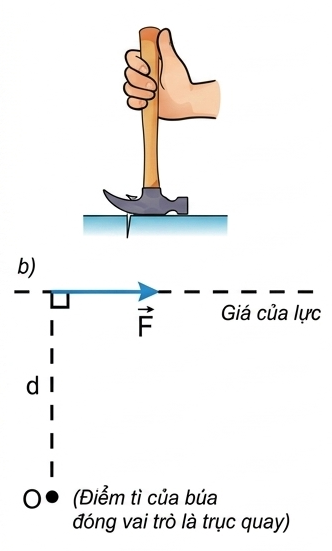
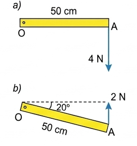
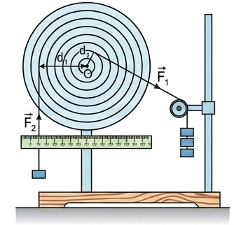
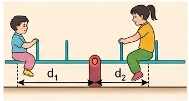
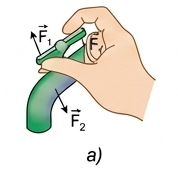
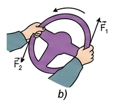
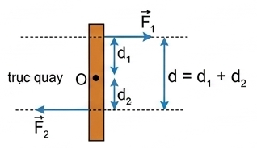
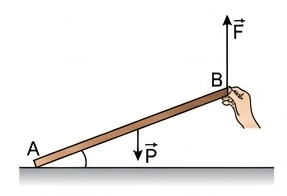
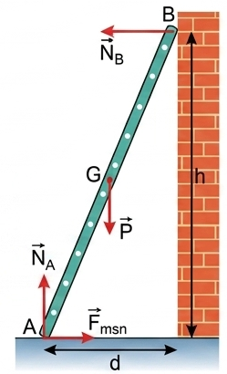
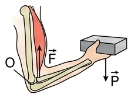

Ở lớp 8 các em đã học trong môn KHTN về tác dụng làm quay của lực. Muốn mô tả chính xác tác dụng của búa khi dùng để nhổ đinh, ta phải đưa vào khái niệm mới là cánh tay đòn của lực.

Hình 21.1. Dùng búa nhổ đinh
1. Mô tả thao tác dùng búa để nhổ đinh.
2. Lực \( \vec{F} \) nên đặt vào đâu trên cán búa để nhổ đinh được dễ dàng? Khi đó cánh tay đòn (\( d \)) của lực lớn hay nhỏ?
3. Tác dụng làm quay của lực phụ thuộc những yếu tố nào?
Hướng dẫn:
1. Một tay cầm cán búa, đặt đầu búa (điểm tì) làm điểm tựa trên mặt bàn/gỗ, móc đinh vào khe búa rồi tác dụng lực kéo cán búa về phía sau.
2. Lực \( \vec{F} \) nên đặt ở cuối cán búa (xa đầu búa nhất). Khi đó cánh tay đòn (\( d \)) của lực là lớn nhất.
3. Phụ thuộc vào độ lớn của lực tác dụng và khoảng cách từ trục quay đến giá của lực (cánh tay đòn).
Ví dụ trên cho phép ta lấy tích \( F.d \) làm đại lượng đặc trưng cho tác dụng làm quay của lực và gọi là moment lực, kí hiệu là \( M \).
Định nghĩa: Moment lực đối với trục quay là đại lượng đặc trưng cho tác dụng làm quay của lực và được đo bằng tích của lực với cánh tay đòn của nó.
$$ M = F.d $$
Đơn vị của moment lực là niutơn mét (N.m).

Hình 21.2. Thước mảnh có thể quay quanh trục O
1. Trong các tình huống ở Hình 21.2a, b, thước OA quay theo chiều kim đồng hồ hay ngược chiều kim đồng hồ?
2. Tính moment lực ứng với mỗi tình huống trong Hình 21.2.
Hướng dẫn:
1. Cả hai trường hợp lực đều kéo đầu A xuống dưới so với trục quay O nằm bên trái, nên thước quay cùng chiều kim đồng hồ.
2. - Ở hình a: \( d = 50 \text{ cm} = 0,5 \text{ m} \). Lực \( F = 4 \text{ N} \). Moment \( M_a = 4 \times 0,5 = 2 \text{ N.m} \).
- Ở hình b: Tương tự tính d dựa vào phương vuông góc (nếu có chi tiết hơn trên hình), hoặc áp dụng đúng khoảng cách tương ứng.
Dùng một đĩa tròn có trục quay đi qua tâm O... Tác dụng vào đĩa những lực \( \vec{F}_1 \) và \( \vec{F}_2 \) sao cho đĩa đứng yên. Khi đó moment của lực \( \vec{F}_1 \) đã cân bằng với moment của lực \( \vec{F}_2 \).

Hình 21.3
1. Nếu bỏ lực \( \vec{F}_1 \) thì đĩa quay theo chiều nào?
2. Nếu bỏ lực \( \vec{F}_2 \) thì đĩa quay theo chiều nào?
3. Khi đĩa cân bằng lập tích \( F_1.d_1 \) và \( F_2.d_2 \) rồi so sánh.
Hướng dẫn:
1. Nếu bỏ \( \vec{F}_1 \), dưới tác dụng của \( \vec{F}_2 \), đĩa sẽ quay ngược chiều kim đồng hồ.
2. Nếu bỏ \( \vec{F}_2 \), dưới tác dụng của \( \vec{F}_1 \), đĩa sẽ quay cùng chiều kim đồng hồ.
3. Khi đĩa cân bằng, tích \( F_1.d_1 \) bằng với tích \( F_2.d_2 \).
Phát biểu: Muốn cho một vật có trục quay cố định ở trạng thái cân bằng, thì tổng các moment lực có xu hướng làm vật quay theo chiều kim đồng hồ phải bằng tổng các moment lực có xu hướng làm vật quay ngược chiều kim đồng hồ.
Nếu chọn một chiều quay làm chiều dương thì điều kiện cân bằng của vật có trục quay cố định là: Tổng các moment lực tác dụng lên vật (đối với một điểm bất kì) bằng 0.

Hình 21.4. Chiếc bập bênh
a) Sử dụng kiến thức về moment lực giải thích vì sao chiếc bập bênh đứng cân bằng.
b) Cho biết người chị có trọng lượng \( P_2 = 300\text{ N} \), khoảng cách \( d_2 = 1\text{ m} \), người em có trọng lượng \( P_1 = 200\text{ N} \). Hỏi khoảng cách \( d_1 \) phải bằng bao nhiêu để bập bênh cân bằng?
Giải:
a) Bập bênh cân bằng vì moment lực do trọng lượng người chị tạo ra (làm quay cùng chiều kim đồng hồ) cân bằng với moment lực do trọng lượng người em tạo ra (làm quay ngược chiều).
b) Áp dụng quy tắc moment: \( P_1.d_1 = P_2.d_2 \)
=> \( 200 \times d_1 = 300 \times 1 \)
=> \( d_1 = 1,5 \text{ m} \)
Định nghĩa: Ngẫu lực là hệ hai lực song song, ngược chiều, có độ lớn bằng nhau và cùng đặt vào một vật.
Tác dụng: Ngẫu lực tác dụng lên một vật chỉ làm cho vật quay chứ không tịnh tiến.

Hình 21.5a. Vặn vòi nước

Hình 21.5b. Vô lăng ô tô
Vì hai lực \( \vec{F}_1 \) và \( \vec{F}_2 \) đều làm cho vật quay theo một chiều nên moment của ngẫu lực M được xác định:
$$ M = F_1.d_1 + F_2.d_2 = F.d $$
Trong đó \( F \) là độ lớn của mỗi lực, \( d \) là khoảng cách giữa hai giá của lực (gọi là cánh tay đòn của ngẫu lực).

Hình 21.6
Hoạt động 1: Đặt một chiếc thước dài trên bàn. Cho một bạn nâng một đầu thước lên và giữ yên (Hình 21.7).

Hoạt động 2: Khi một vật không có điểm tựa cố định. Ví dụ thanh cứng tựa vào tường nhẵn (Hình 21.8). Có áp dụng được quy tắc moment không?
Gợi ý: Chọn đầu A của thanh để viết quy tắc moment.

Ta đã biết, vật đứng yên thì trọng lực phải cân bằng với các lực khác tác dụng lên vật. Như vậy, điều kiện cân bằng tổng quát là:
Áp dụng điều kiện cân bằng tổng quát vào thanh cứng tựa tường (Hình 21.8).
a) Viết điều kiện cân bằng thứ nhất.
b) Viết điều kiện cân bằng thứ hai đối với trục quay A.
Hướng dẫn:
a) Điều kiện tổng lực: \( \vec{P} + \vec{N}_A + \vec{N}_B + \vec{F}_{msn} = \vec{0} \)
Chiếu lên phương Ox, Oy ta sẽ có các phương trình vô hướng.
b) Trục quay tại A. Các lực đi qua A (\( N_A, F_{msn} \)) có moment bằng 0.
Phương trình moment: \( M_{\vec{N}_B} = M_{\vec{P}} \)
Hay: \( N_B \times h = P \times \frac{d}{2} \)
Giải thích được sự cân bằng moment trong cấu trúc cánh tay người (Hình 21.9).

Khi áp dụng quy tắc moment, ta có thể chọn trục quay ở bất kỳ điểm nào trên vật. Tuy nhiên, để bài toán đơn giản, nên chọn trục quay đi qua điểm có nhiều lực tác dụng chưa biết nhất (để loại bỏ moment của các lực này).
Câu 1: Moment lực tác dụng lên vật là đại lượng đặc trưng cho:
Câu 2: Biểu thức đúng tính moment lực \( M \) đối với trục quay là:
Câu 3: Đơn vị của moment lực trong hệ SI là:
Câu 4: Ngẫu lực là hệ gồm hai lực:
Câu 5: Một vật rắn đứng yên cân bằng khi:
Bài 1: Một thanh AB nhẹ dài 2m có trục quay tại O (với OA = 0,5m). Treo vào đầu A vật m1 = 6kg. Hỏi phải treo vào đầu B vật m2 có khối lượng bao nhiêu để thanh cân bằng nằm ngang? (Lấy g = 10 m/s²).
Lời giải:
Chiều dài thanh \( AB = 2\text{m} \), \( OA = 0,5\text{m} \) \(\Rightarrow OB = AB - OA = 2 - 0,5 = 1,5\text{m}\).
Trọng lượng vật tại A: \( P_1 = m_1.g = 6 \times 10 = 60\text{N} \).
Áp dụng quy tắc moment đối với trục quay O:
$$ M_A = M_B \Rightarrow P_1.OA = P_2.OB $$
$$ \Rightarrow 60 \times 0,5 = P_2 \times 1,5 $$
$$ \Rightarrow 30 = 1,5.P_2 \Rightarrow P_2 = 20\text{N} $$
Khối lượng vật cần treo ở B là: \( m_2 = \frac{P_2}{g} = \frac{20}{10} = 2\text{kg} \).
Bài 2: Một người dùng cờ lê dài 25 cm để vặn đai ốc. Người đó tác dụng một lực F = 80N vuông góc với cán cờ lê ở điểm cách đầu cờ lê 20 cm. Tính moment lực tác dụng lên đai ốc.
Lời giải:
Lực tác dụng vuông góc với cán cờ lê, nên cánh tay đòn chính là khoảng cách từ điểm đặt lực đến trục quay (đai ốc).
Theo đề, lực đặt tại điểm cách đầu (đai ốc) một đoạn \( d = 20\text{ cm} = 0,2\text{ m} \).
Độ lớn của lực: \( F = 80\text{ N} \).
Moment lực tạo ra là:
$$ M = F.d = 80 \times 0,2 = 16 \text{ N.m} $$
Bài 3: Tài xế tác dụng ngẫu lực vào vô lăng ô tô. Biết đường kính vô lăng là 40 cm, mỗi lực trong ngẫu lực có độ lớn 15 N. Tính moment của ngẫu lực đó.
Lời giải:
Khoảng cách giữa hai giá của lực trong ngẫu lực (cánh tay đòn của ngẫu lực) chính là đường kính của vô lăng.
\( d = 40\text{ cm} = 0,4\text{ m} \)
Độ lớn mỗi lực: \( F = 15\text{ N} \)
Áp dụng công thức tính moment ngẫu lực:
$$ M = F.d = 15 \times 0,4 = 6 \text{ N.m} $$